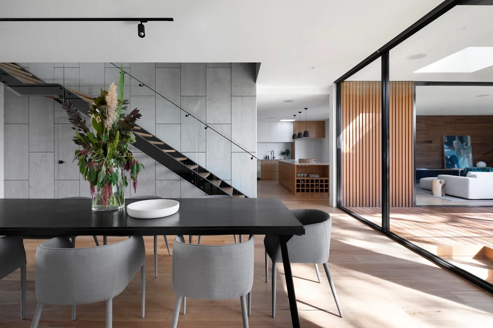

System Kusen Profil 3" & 4"
Profil kusen aluminium heavy-duty YKK AP & Alexindo dengan ketebalan standar SNI 1.1mm - 1.35mm. Tahan benturan dan korosi.
Detail Spesifikasi
Sistem pintu lipat, jendela casement, & kusen aluminium profil YKK AP dan Alexindo berstandar SNI. Dirakit rapi dengan sistem karet EPDM tahan bocor air hujan.
KUSEN ALUMINIUM Malang adalah perusahaan aplikator dan spesialis pengerjaan kusen aluminium, pintu lipat/sliding, jendela casement, serta partisi kaca profesional di Malang. Melayani wilayah Kota Malang, Kabupaten Malang, Batu, Pasuruan, Kediri, Surabaya, dan sekitarnya dengan pendekatan presisi, terencana, dan rapi.
Pilihan produk kusen, pintu, jendela, dan partisi berkualitas tinggi yang dirancang spesifik sesuai gaya arsitektur hunian Anda.
Profil kusen aluminium heavy-duty YKK AP & Alexindo dengan ketebalan standar SNI 1.1mm - 1.35mm. Tahan benturan dan korosi.
Detail Spesifikasi
Bukaan maksimal untuk area teras, taman, atau pembatas ruangan. Dilengkapi roda stainless steel anti-selip dan engsel kokoh.
Detail Spesifikasi
Sistem penguncian rambuncis multi-point dengan Karet EPDM ganda untuk performa luar biasa dalam meredam bising & air hujan.
Detail Spesifikasi
Desain minimalis hemat ruang dengan rel tersembunyi yang halus. Ideal untuk ruang keluarga, balkon, dan akses ruangan utama.
Detail Spesifikasi
Sekat kaca tempered 8mm - 12mm dipadukan bingkai aluminium minimalis untuk tampilan profesional ruko, kantor, & toko.
Detail Spesifikasi
Jendela geser praktis dengan penguncian crescent lock yang aman, mudah dirawat, dan memaksimalkan sirkulasi udara kamar.
Detail SpesifikasiPilihan warna tahan lama yang diproses melalui finishing suhu tinggi agar tidak mudah terkelupas atau pudar terkena paparan sinar matahari.
Kami tidak hanya memotong aluminium, melainkan menghitung sudut bukaan miter 45° secara presisi, memasang karet seal EPDM anti-bocor, serta menyelaraskan kuncian rel heavy-duty.
Potongan sudut rangka menggunakan mesin potong miter presisi tinggi sehingga sambungan antar sisi rapat sempurna tanpa celah kotoran.
Sistem karet sintetis EPDM berkualitas tinggi di sekeliling frame untuk mencegah resapan air hujan dan meningkatkan kekedapan suara.
Engsel stang casement, rambuncis, dan rel sliding berbahan stainless steel 304 yang tahan karat serta tidak melengkung saat dipakai.
Menggunakan ketebalan bahan murni bersertifikat dari YKK AP & Alexindo, bukan aluminium tipis yang mudah penyok.
Alur pengerjaan yang terstruktur menjamin hasil presisi, rapi, dan tepat waktu tanpa hambatan di lapangan.
Tim teknis kami mengunjungi lokasi Anda di Malang Raya untuk mengukur dimensi lubang bukaan tembok secara akurat.
Penyusunan Rencana Anggaran Biaya transparan per meter lari/persegi dan persetujuan spesifikasi merek serta warna.
Pemotongan profil sudut miter 45°, perakitan rangka, dan perakitan aksesoris kuncian di workshop kami.
Pemasangan di lokasi, pemberian sealant silikon kedap air, pengujian fungsi kunci, & penyerahan kartu garansi.
Hitung estimasi bukaan aluminium Anda dan dapatkan rincian penawaran resmi via WhatsApp.
Apa Kata Klien Kami
"Rekomendasi aplikator terbaik di Malang! Konsultasi gratis sangat membantu, tim teknis memahami kebutuhan dengan baik, dan hasil akhir melebihi ekspektasi kami."
Galeri proyek perumahan pribadi, ruko, dan gedung perkantoran di Malang Raya.

Jawaban seputar pengerjaan kusen, jendela, & pintu aluminium KUSEN ALUMINIUM Malang.
Diskusikan spesifikasi merek, ukuran bukaan, & simulasi biaya bersama tim ahli KUSEN ALUMINIUM Malang. Layanan survei lokasi gratis!